The lab
Every instrument on this page runs on the same numbers as the software: machine.yaml for the geometry,
the GGX model behind make sim for the light. Nothing here is a measurement; no machine has been built yet.

Machine simulator
Offline illustration: no instrument connected. Angles and clearances are computed in your browser from machine.yaml; nothing here is a measurement.
Drag (or focus the view and use the arrow keys) to look around · scroll or +/− to zoom · double-click or 0 to reset · click a part for its files · slide the build stage.
–
–
–
–
BRDF explorer
Lambert + GGX + Schlick, in-plane. Radius ∝ √(fr cos θr).
$$f_r=(1-m)(1-F)\frac{\rho}{\pi}+\frac{D\,G_2\,F}{4\cos\theta_i\cos\theta_r}$$
Calibration lab
What opengonio verify and calibrate see (stages 06–07), on the same GGX mirror and lamp model as make sim. Hover the chart for values.
Steps: M19.1 (mirror sweeps), M22.2 (angle offset), M18.3 (warm-up). Practice: M02.3.
3D photo scanner
Stages 11–12. Fixed camera; M1 spins and M2 tilts the object, so every pose is known [S9].
Blue: views. Yellow: photometric-stereo lights. Mast 0° = coplanar lights, no normals.

$$\lambda\,[u,v,1]^\top = K(R_{oc}p_O+t_{oc}),\quad R_{oc}=R_{wc}RP\qquad V=\bigcap_j\{p:\pi_j(p)\in S_j\}\qquad I=L\,g,\;g=\rho\hat n$$
Equations
Hanrahan CS348b [R2]; Ansari-Asl et al. [R1].
BRDF and reflection equation
$$f_r(\omega_i\to\omega_r)\equiv\frac{dL_r(\omega_i\to\omega_r)}{dE_i}\quad[\mathrm{sr}^{-1}]\qquad L_r(x,\omega_r)=\int_{H^2}f_r(x,\omega_i\to\omega_r)L_i(x,\omega_i)\cos\theta_i\,d\omega_i$$Reciprocity, isotropy, energy
$$f_r(\omega_r\to\omega_i)=f_r(\omega_i\to\omega_r)\qquad f_r(\theta_i,\varphi_i;\theta_r,\varphi_r)=f_r(\theta_i,\theta_r,|\varphi_r-\varphi_i|)\qquad \frac{d\Phi_r}{d\Phi_i}\le 1$$Mirror, Snell, total internal reflection
$$\hat R=\hat I-2(\hat I\cdot\hat N)\hat N\qquad f_{r,m}=\frac{\delta(\cos\theta_i-\cos\theta_r)}{\cos\theta_i}\delta(\varphi_i-\varphi_r\pm\pi)\qquad \eta_i\sin\theta_i=\eta_t\sin\theta_t\qquad 1-\mu^2\big(1-(\hat I\cdot\hat N)^2\big)<0$$Fresnel, Cook-Torrance colour, Lambert
$$F(\theta)=F(0)+(1-F(0))(1-\cos\theta)^5\qquad R=R(0)+R(\tfrac{\pi}{2})\frac{F(\theta)-F(0)}{F(\pi/2)-F(0)}\qquad f_{r,d}=\frac{\rho_d}{\pi}$$Isotropic vs anisotropic; in-plane angles [R1][G9]
$$f_r^{\mathrm{iso}}=f_r(\theta_i,\theta_r,|\varphi_r-\varphi_i|)\qquad f_r^{\mathrm{aniso}}=f_r(\theta_i,\varphi_i,\theta_r,\varphi_r)\qquad \theta_r=M_3,\;\theta_i=M_4-M_3,\;\text{specular } M_3=M_4/2$$Measured quantities [R1]
$$Y^{\mathrm{SVBRDF}}=\mathrm{SVBRDF}(x,y,\theta_i,\varphi_i,\theta_r,\varphi_r,\lambda)\qquad Y^{\mathrm{BTF}}=\mathrm{BTF}(x,y,\theta_i,\varphi_i,\theta_r,\varphi_r,\lambda)$$Kinematics (Tait-Bryan, extrinsic x-y-z) and per-pixel directions [R1]
$$R=R_z(M_3)R_y(-M_2)R_x(M_1)\qquad \omega^s=R^\top\omega^w\qquad \omega_i(p)=\frac{P_L-p}{\|P_L-p\|},\;\omega_r(p)=\frac{P_C-p}{\|P_C-p\|}$$Fixed-camera optics [R1]
$$\frac{1}{p'}-\frac{1}{p}=\frac{1}{f}\qquad m=\frac{p'}{p}\qquad d_{\mathrm{Airy}}=2.44\lambda N\qquad \mathrm{DOF}\approx\frac{2Nc(1+m)}{m^2}$$HDR response (Debevec & Malik) [R5]
$$g(Z_{ij})=\ln E_i+\ln\Delta t_j$$Build plan
18 stages, 48 milestones, one GitHub issue per step (Time · Needs → Do → Verify → If a check fails → Record). Laptop mode or standalone (Pi Zero + buttons).



Budget
Cheapest parts, prices checked 2026-10-04. Your decisions (agree, have, ordered, swap, skip, paid) live in PARTS.md, editable on GitHub.

References
Key sources. Full list (489): REFERENCES.md.
| ID | Source |
|---|---|
| R1 | Ansari-Asl, Barbieri, Obein, Hardeberg, J. Imaging 10(3):55, 2024. doi:10.3390/jimaging10030055 |
| R2 | P. Hanrahan, Reflection Models I: Ideal Materials, Stanford CS348b Lecture 10, 2016 |
| S1–S3 | COLMAP format and known-pose FAQ; Schönberger & Frahm 2016. colmap.github.io |
| S4–S7 | Woodham 1980 (photometric stereo); Laurentini 1994 (visual hull); Szeliski 1993; Kutulakos & Seitz 2000 |
| S9 | Fitzgibbon, Cross, Zisserman, turntable reconstruction, 1998. doi |
| R5 | Debevec & Malik, SIGGRAPH 1997. PDF |
| R6–R8 | Walter et al. 2007 (GGX); Schlick 1994; Cook & Torrance 1982 |
| R83–R85 | grblHAL core, Trinamic plugin and RP2040 board map. github.com/grblHAL |
| R20–R30 | FluidNC documentation (ESP32-board option). wiki.fluidnc.com |
| R73 | KaTeX (equation rendering). katex.org |